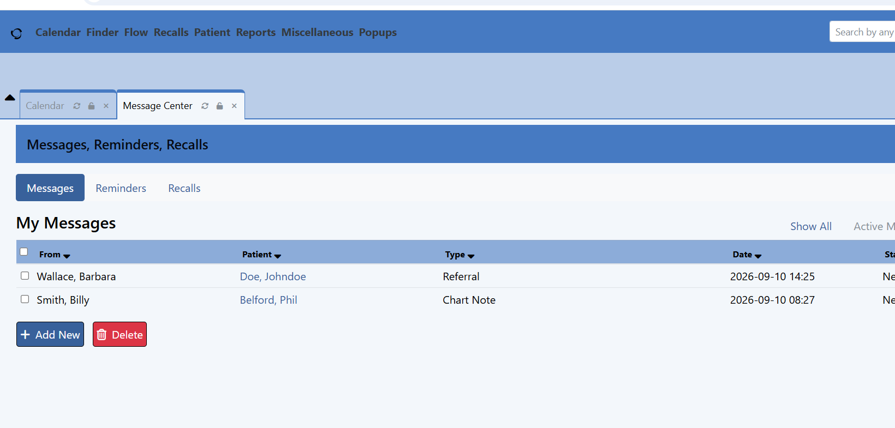
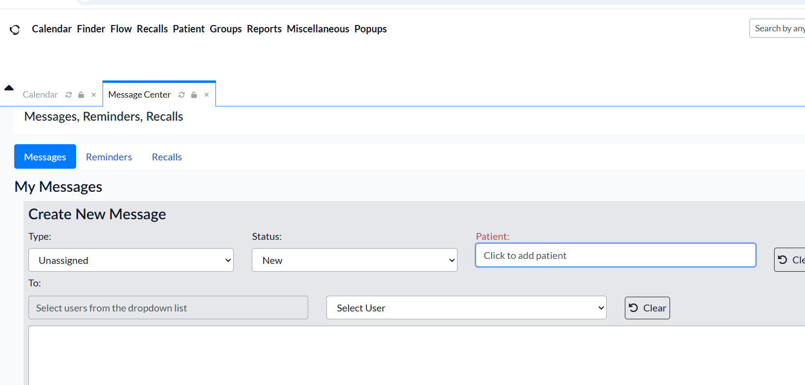
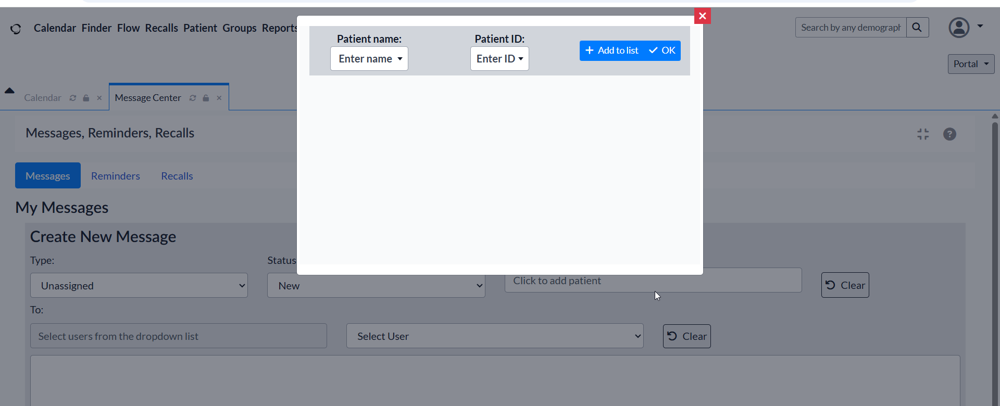

Read and Send Messages
Review messages and create a new message for a selected patient or recipient.
-
Open the Message Center.

- Review the available messages and select a message to read it.
-
Select the option to create a new message.

-
Select the patient or recipient associated with the message.

- Enter the message details and send the message.